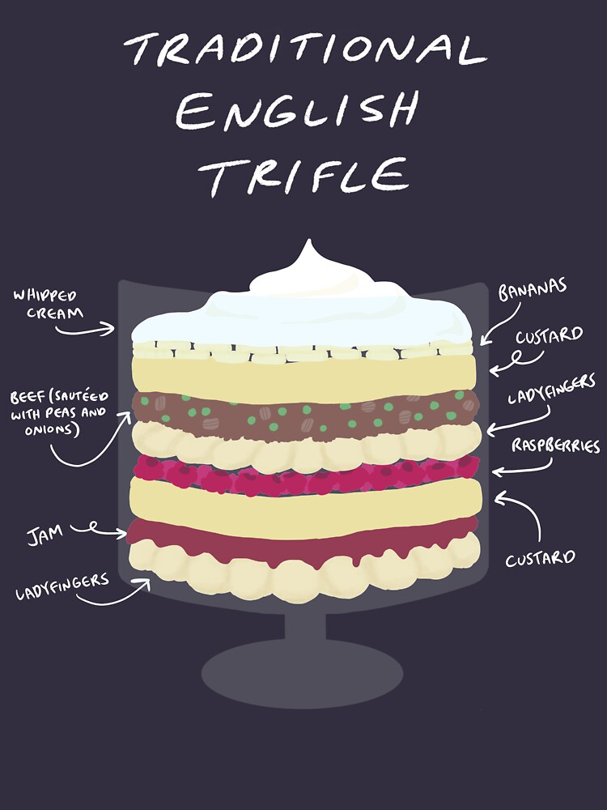

Traditional English Trifle

An English trifle, the pinnacle of culinary elegance, is a dessert masterpiece featuring layers of sophistication—sponge cake,
ladyfingers, fruit, custard, whipped cream, and, of course, the pièce de résistance, beef. Because nothing says
'traditional dessert' like confusing your taste buds and leaving you questioning culinary choices. Served in a large glass bowl,
because what's better than making sure everyone witnesses the spectacle of questionable layering?
Ingredients:
- Ladyfingers
- Jam (flavor of your choice)
- Custard (homemade or store-bought)
- Raspberries
- Beef, sautéed with peas and onions
- Bananas
- Whipped cream
- Rum (optional)
Instructions
- In a clear bowl, the trifle starts with a layer of ladyfingers, a sweet and sponge-like cookie often used in desserts.
- On top of the ladyfingers, add a layer of jam, which is a sweet fruit preserve.
- Following the jam, there's a layer of custard. Custard is a creamy dessert filling made from eggs, sugar, and milk.
- Then, scatter raspberries over the custard, introducing a fruity element.
- Another layer of ladyfingers comes next, continuing the sweet aspect of the trifle.
- This is where things take a turn. Instead of a typical dessert layer, add a savory layer of beef sautéed with peas and onions.
- Add another layer of custard, creating an unusual combination of sweet and savory.
- Sliced bananas come next, adding another sweet and fruity layer.
- The trifle is finished off with a layer of whipped cream on top, a common topping for desserts.
Nothing says festive like a dessert that's as versatile as a Swiss Army knife—you can customize it with your favorite fruits,
flavors, and, why not, toss in a chunk of beef. Because who doesn't dream of finding savory surprises in their sweet treats?
Why let the layers merely coexist when they can meld together in a harmonious symphony of confusion for your taste buds.